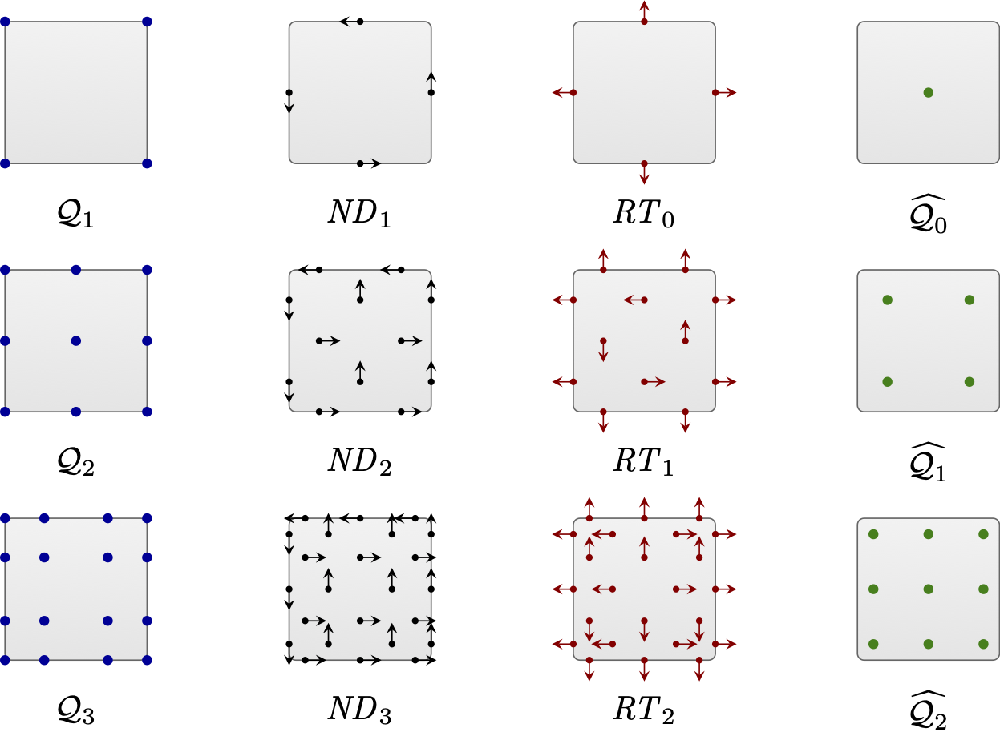
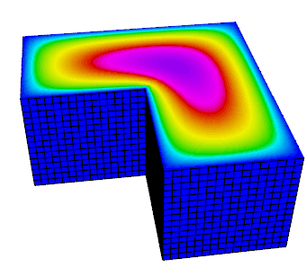
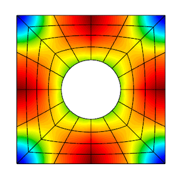
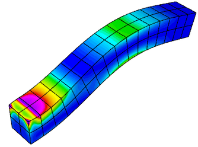
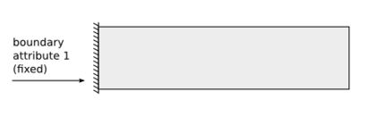

Tour of MFEM Examples
45 minutes intermediate
Lesson Objectives
Note
High-order methods
MFEM includes support for the full de Rham complex, $H^1-$conforming (continuous), $H(curl)-$conforming (continuous tangential component), $H(div)-$conforming (continuous normal component), and $L^2-$conforming (discontinuous) finite element discretization spaces in 2D and 3D. A compatible high-order de Rham complex on the discrete level can be constructed using the *_FECollection classes with * replaced by H1, ND, RT, and L2, respectively.
Note that MFEM supports arbitrary discretization order for the full de Rham complex. For example, here is an illustration of the FEM degrees of freedom on quadrilaterals for orders 1—3:

The first four MFEM examples serve as an introduction on how to construct and use these discrete spaces for the solution of various PDEs. All of them have the -o/--order command line parameter to specify the finite element space order at runtime.
Before building the example codes, make sure you are in the examples directory: cd ~/mfem/examples.
Note
make ex* for the serial version or make ex*p for the parallel version. You can build multiple examples in the same command: make ex3 ex4 ex3p ex4p.

Example 1 (ex1.cpp and ex1p.cpp) solves a simple Poisson problem using a scalar $H^1$ space. More specifically, it solves the problem $$-\Delta u = 1$$ with homogeneous Dirichlet boundary conditions.
Try the following sample runs:
./ex1 -m ../data/square-disc.mesh
./ex1 -m ../data/fichera.mesh
mpirun -np 4 ex1p -m ../data/star-surf.mesh
mpirun -np 4 ex1p -m ../data/mobius-strip.mesh
The plot on the right corresponds to the 2nd sample run with i, Z and m pressed in the GLVis window, followed by rotation with the mouse Left button.

Example 2 (ex2.cpp and ex2p.cpp) solves a linear elasticity problem using a vector $H^1$ space. The problem describes a multi-material cantilever beam. The weak form is $$-{\rm div}({\sigma}({\bf u})) = 0$$ where $${\sigma}({\bf u}) = \lambda\, {\rm div}({\bf u})\,I + \mu\,(\nabla{\bf u} + \nabla{\bf u}^T)$$ is the stress tensor corresponding to displacement field ${\bf u}$, and $\lambda$ and $\mu$ are the material Lame constants. The boundary conditions are ${\bf u}=0$ on the fixed part of the boundary with attribute 1, and ${\sigma}({\bf u})\cdot n = f$ on the remainder with $f$ being a constant pull down vector on boundary elements with attribute 2, and zero otherwise.
Try the following sample runs:
./ex2 -m ../data/beam-tri.mesh
./ex2 -m ../data/beam-hex.mesh
mpirun -np 4 ex2p -m ../data/beam-wedge.mesh
mpirun -np 4 ex2p -m ../data/beam-quad.mesh -o 3 -elast
The plot on the right corresponds to the 2nd sample run with m pressed in the GLVis window.

Example 3 (ex3.cpp and ex3p.cpp) solves a 3D electromagnetic diffusion problem (definite Maxwell) using an $H(curl)$ finite element space. It solves the equation $$\nabla\times\nabla\times\, E + E = f$$ with boundary condition $ E \times n $ = "given tangential field". Here, the r.h.s. $f$ and the boundary condition data are computed using a given exact solution $E$.
Try the following sample runs:
./ex3 -m ../data/star.mesh
./ex3 -m ../data/beam-tri.mesh -o 2
mpirun -np 4 ex3p -m ../data/fichera.mesh
mpirun -np 4 ex3p -m ../data/escher.mesh -o 2
The plot on the right corresponds to the 3rd sample run with m and A pressed in the GLVis window.

Example 4 (ex4.cpp and ex4p.cpp) solves a 2D/3D $H(div)$ diffusion problem using an $H(div)$ finite element space. The $H(div)$ diffusion problem corresponds to the second-order definite equation $$-{\rm grad}(\alpha\,{\rm div}(F)) + \beta F = f$$ with boundary condition $F \cdot n$ = "given normal field". Here, the r.h.s. $f$ and the boundary condition data are computed using a given exact solution $F$.
Try the following sample runs:
./ex4 -m ../data/square-disc.mesh
./ex4 -m ../data/periodic-square.mesh -no-bc
mpirun -np 4 ex4p -m ../data/fichera-q2.vtk
mpirun -np 4 ex4p -m ../data/amr-quad.mesh
The plot on the right is similar to the 1st sample run with R, j and l pressed in the GLVis window.
Discontinuous Galerkin
 MFEM supports high-order Discontinuous Galerkin (DG) discretizations through various face integrators. Additionally, it includes numerous explicit and implicit ODE time integrators which are used for the solution of time-dependent PDEs.
MFEM supports high-order Discontinuous Galerkin (DG) discretizations through various face integrators. Additionally, it includes numerous explicit and implicit ODE time integrators which are used for the solution of time-dependent PDEs.
Example 9 (ex9.cpp and ex9p.cpp) solves the time-dependent advection equation $$\frac{\partial u}{\partial t} + v \cdot \nabla u = 0,$$ where $v$ is a given fluid velocity, and $u_0(x)=u(0,x)$ is a given initial condition.
The example demonstrates the use of DG bilinear forms, the use of explicit and implicit (with block ILU preconditioning) ODE time integrators, the definition of periodic boundary conditions through periodic meshes, as well as the use of GLVis for persistent visualization of a time-evolving solution.
Try the following sample runs:
./ex9 -m ../data/periodic-square.mesh -p 3 -r 4 -dt 0.0025 -tf 9 -vs 20
./ex9 -m ../data/disc-nurbs.mesh -p 1 -r 3 -dt 0.005 -tf 9
mpirun -np 4 ex9p -m ../data/star-q3.mesh -p 1 -rp 1 -dt 0.004 -tf 9
mpirun -np 16 ex9p -m ../data/amr-hex.mesh -p 1 -rs 1 -rp 0 -dt 0.005 -tf 0.5
The plot on the right corresponds to the 1st sample run with R, j and l pressed in the GLVis window.
Note
-vs
command line parameter above). To start/pause these updates press space in the GLVis window,
or click the icon in the upper center portion of the window.
Nonlinear elasticity

Example 10 (ex10.cpp and ex10p.cpp) solves a time dependent nonlinear elasticity problem of the form $$ \frac{dv}{dt} = H(x) + S v\,,\qquad \frac{dx}{dt} = v\,, $$ where $H$ is a hyperelastic model and $S$ is a viscosity operator of Laplacian type. The geometry of the domain is assumed to be as follows:

The example demonstrates the use of nonlinear operators, as well as their implicit time integration using a Newton method for solving an associated reduced backward-Euler type nonlinear equation. Each Newton step requires the inversion of a Jacobian matrix, which is done through a (preconditioned) inner solver.
Before trying this example, modify the source code of ex10.cpp to disable the
second visualization stream as follows:
@@ -298,7 +298,7 @@ int main(int argc, char *argv[])
vis_v.precision(8);
v.SetFromTrueVector(); x.SetFromTrueVector();
visualize(vis_v, mesh, &x, &v, "Velocity", true);
- vis_w.open(vishost, visport);
+ // vis_w.open(vishost, visport);
if (vis_w)
{
oper.GetElasticEnergyDensity(x, w);
Make identical change in ex10p.cpp, line 347.
Now rebuild both examples: make ex10 ex10p, and try the following sample runs:
./ex10 -m ../data/beam-hex.mesh -s 2 -r 1 -o 2 -dt 3
./ex10 -m ../data/beam-tri.mesh -s 3 -r 2 -o 2 -dt 3
mpirun -np 4 ex10p -m ../data/beam-wedge.mesh -s 2 -rs 1 -dt 3
mpirun -np 4 ex10p -m ../data/beam-tet.mesh -s 2 -rs 1 -dt 3
The plot on the right corresponds to the 1st sample run.
Adaptive mesh refinement

MFEM provides support for local conforming and non-conforming adaptive mesh refinement (AMR) with arbitrary-order hanging nodes, anisotropic refinement, derefinement, and parallel load balancing. The AMR support covers the full de Rham complex, i.e., the energy spaces $H^1$, $H(curl)$, $H(div)$ and $L^2$. You can choose from several error estimators, such as the Zienkiewicz-Zhu (ZZ) or the Kelly estimator, to drive the AMRs. We recommend looking at examples 6, 15, 21, and 30 for some simulations with AMR.
Example 15 (ex15.cpp and ex15p.cpp) demonstrates MFEM's capability to refine, derefine, and load balance non-conforming meshes in 2D and 3D as well as on linear, curved, and surface meshes. In this example the mesh is adapted to a time-dependent solution. At each time step the problem is solved on a sequence of adaptive meshes that are refined based on a simple ZZ estimator. At the end of the refinement process, the error estimates are used to identify elements that are over-refined, and a single derefinement step is performed. Finally, in the parallel case, a load-balancing step is executed.
Try the following sample runs:
./ex15 -n 3
./ex15 -m ../data/square-disc.mesh
./ex15 -est 1 -e 0.0001
mpirun -np 4 ex15p -m ../data/mobius-strip.mesh
mpirun -np 4 ex15p -m ../data/fichera.mesh -tf 0.5
The plot on the right is related to the parallel version of the 1st sample run with R, j, l and m pressed in the GLVis window.
Complex-valued problems
MFEM provides a user-friendly interface for solving complex valued systems.
These kinds of problems can be formulated using the classes ComplexOperator,
ComplexLinearForm, SesquilinearForm, ComplexGridFunction, and their parallel
counterparts. You can define the weak formulation by providing the integrators
of real and imaginary parts independently and then use similar methods as in
the real problems (such us Assemble, FormLinearSystem, and RecoverFEMSolution)
to recover the solution.
Currently, there are two examples demonstrating the use of complex-valued systems.
Example 22 (ex22.cpp and ex22p.cpp) implements three variants of a damped harmonic oscillator:

-
A scalar $H^1$ field: $$-\nabla\cdot\left(a \nabla u\right) - \omega^2 b\,u + i\,\omega\,c\,u = 0$$
-
A vector $H(curl)$ field: $$\nabla\times\left(a\nabla\times\vec{u}\right) - \omega^2 b\,\vec{u} + i\,\omega\,c\,\vec{u} = 0$$
-
A vector $H(div)$ field: $$-\nabla\left(a \nabla\cdot\vec{u}\right) - \omega^2 b\,\vec{u} + i\,\omega\,c\,\vec{u} = 0$$
In each case the field is driven by a forced oscillation, with angular frequency $\omega$ imposed at the boundary or a portion of the boundary.
Before trying this example, modify the source code of ex22.cpp to disable the
additional visualization streams as follows:
@@ -272,8 +272,8 @@ int main(int argc, char *argv[])
{
char vishost[] = "localhost";
int visport = 19916;
- socketstream sol_sock_r(vishost, visport);
- socketstream sol_sock_i(vishost, visport);
+ socketstream sol_sock_r(vishost, visport+1);
+ socketstream sol_sock_i(vishost, visport+2);
sol_sock_r.precision(8);
sol_sock_i.precision(8);
sol_sock_r << "solution\n" << *mesh << u_exact->real()
@@ -482,8 +482,8 @@ int main(int argc, char *argv[])
{
char vishost[] = "localhost";
int visport = 19916;
- socketstream sol_sock_r(vishost, visport);
- socketstream sol_sock_i(vishost, visport);
+ socketstream sol_sock_r(vishost, visport+3);
+ socketstream sol_sock_i(vishost, visport+4);
sol_sock_r.precision(8);
sol_sock_i.precision(8);
sol_sock_r << "solution\n" << *mesh << u.real()
@@ -497,8 +497,8 @@ int main(int argc, char *argv[])
char vishost[] = "localhost";
int visport = 19916;
- socketstream sol_sock_r(vishost, visport);
- socketstream sol_sock_i(vishost, visport);
+ socketstream sol_sock_r(vishost, visport+5);
+ socketstream sol_sock_i(vishost, visport+6);
sol_sock_r.precision(8);
sol_sock_i.precision(8);
sol_sock_r << "solution\n" << *mesh << u_exact->real()
@@ -522,7 +522,7 @@ int main(int argc, char *argv[])
<< " Press space (in the GLVis window) to resume it.\n";
int num_frames = 32;
int i = 0;
- while (sol_sock)
+ while (sol_sock && i < 3*num_frames)
{
double t = (double)(i % num_frames) / num_frames;
ostringstream oss;
Make identical changes in ex22p.cpp, lines 304-305, 532-533, 549-550 and 577.
Now rebuild both examples: make ex22 ex22p, and try the following sample runs:
./ex22 -m ../data/inline-quad.mesh -o 3 -p 1
./ex22 -m ../data/inline-hex.mesh -o 2 -p 2 -pa
mpirun -np 1 ex22p -m ../data/star.mesh -o 2 -sigma 10.0
mpirun -np 16 ex22p -m ../data/star.mesh -o 2 -sigma 10.0 -rs 4 -rp 3 -no-vis
mpirun -np 1 ex22p -m ../data/inline-pyramid.mesh -o 1
mpirun -np 16 ex22p -m ../data/inline-pyramid.mesh -o 1 -rs 2 -rp 2 -no-vis
The plot on the right corresponds to the 3rd and 4th sample runs with R, j and l pressed in the GLVis window.

Example 25 (ex25.cpp and ex25p.cpp) illustrates the use of a Perfectly Matched Layer (PML) for the simulation of time-harmonic electromagnetic waves propagating in unbounded domains. The implementation involves the introduction of an artificial absorbing layer that minimizes undesired reflections. Inside this layer a complex coordinate stretching map forces the wave modes to decay exponentially.
The example solves the indefinite Maxwell equations $$ \nabla \times (a \nabla \times E) - \omega^2 b E = f $$ where $a = \mu^{-1} |J|^{-1} J^T J$, $b= \epsilon |J| J^{-1} J^{-T}$ and $J$ is the Jacobian matrix of the coordinate transformation.
Before trying this example, modify the source code of ex25.cpp to disable the
additional visualization streams as follows:
@@ -570,13 +570,13 @@ int main(int argc, char *argv[])
char vishost[] = "localhost";
int visport = 19916;
- socketstream sol_sock_re(vishost, visport);
+ socketstream sol_sock_re(vishost, visport+1);
sol_sock_re.precision(8);
sol_sock_re << "solution\n"
<< *mesh << x.real() << keys
<< "window_title 'Solution real part'" << flush;
- socketstream sol_sock_im(vishost, visport);
+ socketstream sol_sock_im(vishost, visport+2);
sol_sock_im.precision(8);
sol_sock_im << "solution\n"
<< *mesh << x.imag() << keys
@@ -594,7 +594,7 @@ int main(int argc, char *argv[])
<< " Press space (in the GLVis window) to resume it.\n";
int num_frames = 32;
int i = 0;
- while (sol_sock)
+ while (sol_sock && i < 3*num_frames)
{
double t = (double)(i % num_frames) / num_frames;
ostringstream oss;
Make identical changes in ex25p.cpp, lines 638, 647 and 674.
Now rebuild both examples: make ex25 ex25p, and try the following sample runs:
./ex25 -o 2 -f 5.0 -ref 4 -prob 2
./ex25 -o 2 -f 1.0 -ref 2 -prob 3
mpirun -np 1 ex25p -o 2 -f 8.0 -rs 2 -rp 2 -prob 4 -m ../data/inline-quad.mesh
mpirun -np 32 ex25p -o 2 -f 8.0 -rs 3 -rp 3 -prob 4 -m ../data/inline-quad.mesh -no-vis
mpirun -np 1 ex25p -o 2 -f 1.0 -rs 2 -rp 2 -prob 0 -m ../data/beam-quad.mesh
mpirun -np 48 ex25p -o 2 -f 1.0 -rs 4 -rp 4 -prob 0 -m ../data/beam-quad.mesh -no-vis
The plot on the right corresponds to the 1st sample run with aaa, mm, c and several p pressed in the GLVis window.
Questions?
Next Steps
Back to the MFEM tutorial page